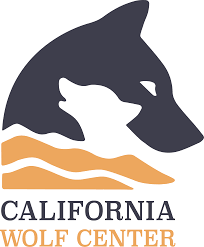
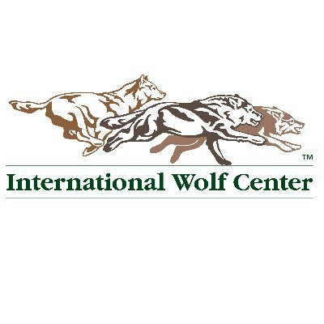
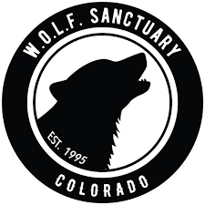
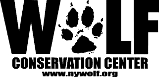

Support Wolves
Wolf Haven International
Wolf Haven International was founded in 1982 by Steve and Linda Kuntz to provide life-long sanctuary and care for captive-born wolves. Today, the sanctuary is accredited by both the Global Federation of Animal Sanctuaries and the American Sanctuary Association and works to educate the public on the behavior and needs of wolves.

California Wolf Center
The California Wolf Center was founded in 1977 by Paul and Judy Kenis to assist in the recovery of wild wolf species through education, conservation, and research. Today, the charity is heavily involved in captive breeding programs for wolves, including the endangered Mexican gray wolf.

International Wolf Center
The Committee for the International Wolf Center was founded in 1985 by a group of biologists led by Dr. L. David Mech, after they consulted in a successful ‘Wolves and Humans’ exhibit at the Science Museum of Minnesota. The International Wolf Center first opened its doors in June 1993 as an education hub to teach local communities about wolves and to allow visitors to get up close and personal with these enigmatic but misunderstood animals.

W.O.L.F. Sanctuary
The W.O.L.F. Sanctuary was founded in 1995 by Fred Johnston to improve the lives of wolves and wolf-dogs across America. Today, the charity manages a successful sanctuary for wolves that have been rescued from unsuitable captive environments..
